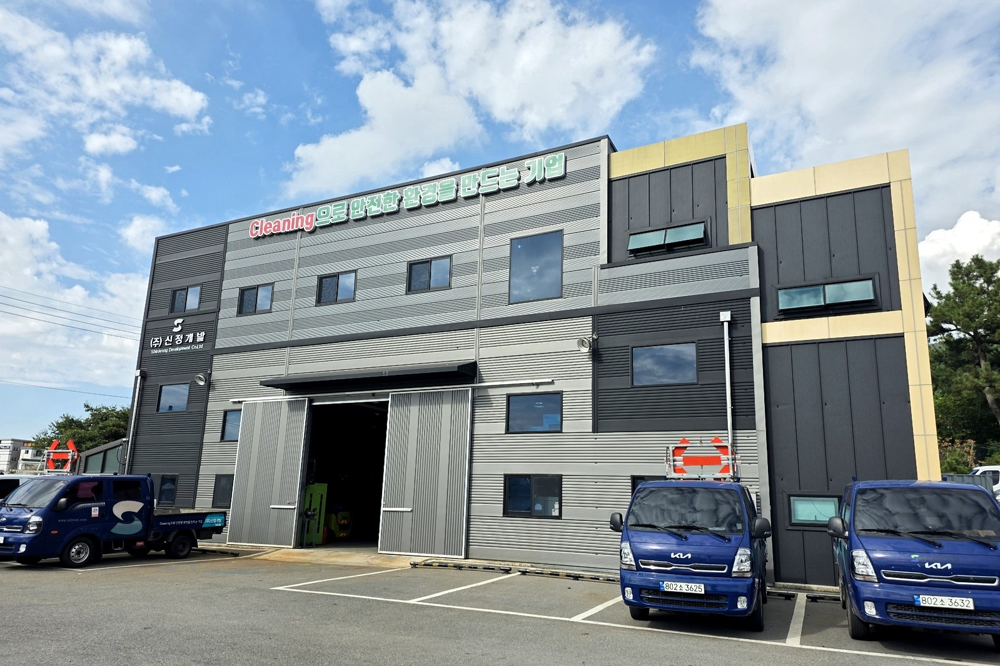

신정개발의 원칙
사람이 없는 곳에
인명 사고도 없다.
현장마다 안전을 지키고, 고객을 배려하며,
내일의 희망을 만듭니다.

본사 마당의 제어 차량 · 흡입차 · 로봇
UNMANNED SOLUTION
무인 솔루션
로봇이 탱크·반응기·배수로·관로 안에 들어가 작업합니다. 작업자는 밖에서 조종하고, 위험이 줄어든 뒤에 들어갑니다.


로봇이 하는 일
 01흡입 · 파쇄
01흡입 · 파쇄탱크 · Pond 안의 위험 물질을 빨아들이거나 부숴서 회수합니다
무인 Vacuum 로봇 02퇴적물 처리
02퇴적물 처리Pond · 배수로 바닥에 쌓인 흙과 슬러지를 치웁니다
무인 로더 03고압 세척
03고압 세척좁은 공간의 설비를 고압수로 씻어 냅니다
무인 Jet Cleaner 04벽면 · 천장
04벽면 · 천장저장 탱크 벽면과 천장에 붙어 움직입니다
연구개발 시제품 · 벽면/천장 부착형 무인 로봇 05흡입 · 준설
05흡입 · 준설스크류로 움직이며 흡입 · 준설합니다
연구개발 시제품 · 흡입/준설 무인 로봇 06파쇄
06파쇄파쇄 장치로 대상물을 부숩니다
연구개발 시제품 · 파쇄 무인 로봇
200회연간 밀폐공간 작업
170여 건수행 실적 (2020~2023)
8건등록 특허
6종면허·허가·등록
주요 현장
- 석유화학·정유 플랜트
- 발전 설비
- 상·하수도
출처: 회사소개서(2024) · 기술소개서(2025)
사업분야
다섯 가지 일을 합니다. 어느 현장에서, 무엇을 투입해 하는지 함께 적었습니다.
-
01
설비 클리닝
- 현장
- 탱크 · Pond · 배수로 · R.T.O
- 투입
- 흡입 로봇 · 제어 차량 · 진공흡입차
-
- 현장
- 반응기 · 흡착탑 · 건조기
- 투입
- 흡입 로봇 · 분리장치 · 건식 흡입차
-
03
화학세정
- 현장
- 배관 · 열교환기 · 냉각탑 · 보일러
- 투입
- 화학세정용 내산장비
-
- 현장
- 하수관 · 오수관 · 처리시설
- 투입
- 무인준설로봇 · 무인로더 · 데칸타
-
- 현장
- 관로 · 맨홀 · 지하매설물
- 투입
- 관로 CCTV 로봇 · CCTV 조사차량 · GPR

적용 사례 전체 보기
로봇 투입 기록: 회사소개서(2024) 43~47쪽 · 기술소개서(2025) 25쪽

회사 소개
1992년부터 한 길.
1992년부터 한 길.
성실하게 쌓아 온 시간이
지금의 신정개발입니다.
1992년 시작한 신정개발은 산업설비와 환경시설을 다루는 클리닝 전문기업입니다. 설비 유지보수, 촉매·충진물 작업, 준설과 시설 조사·보수를 해 왔습니다. 위험한 설비 안에는 로봇이 먼저 들어가 위험 물질을 걷어내고, 작업자는 그다음에 들어갑니다.
환경ISO 14001 환경경영 인증 (2017) · 환경부장관상 (2007) · 일반·지정폐기물 수집·운반업 허가 (2004·2006)